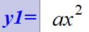
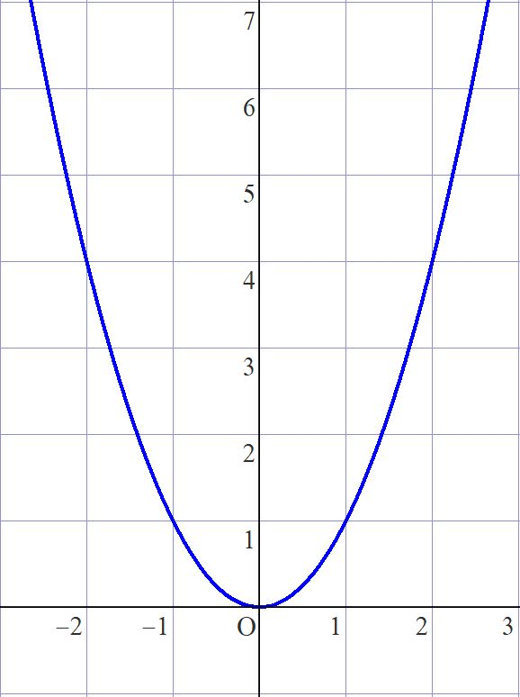
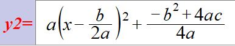
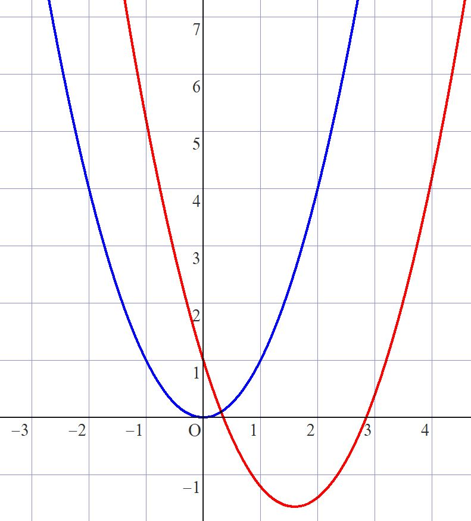
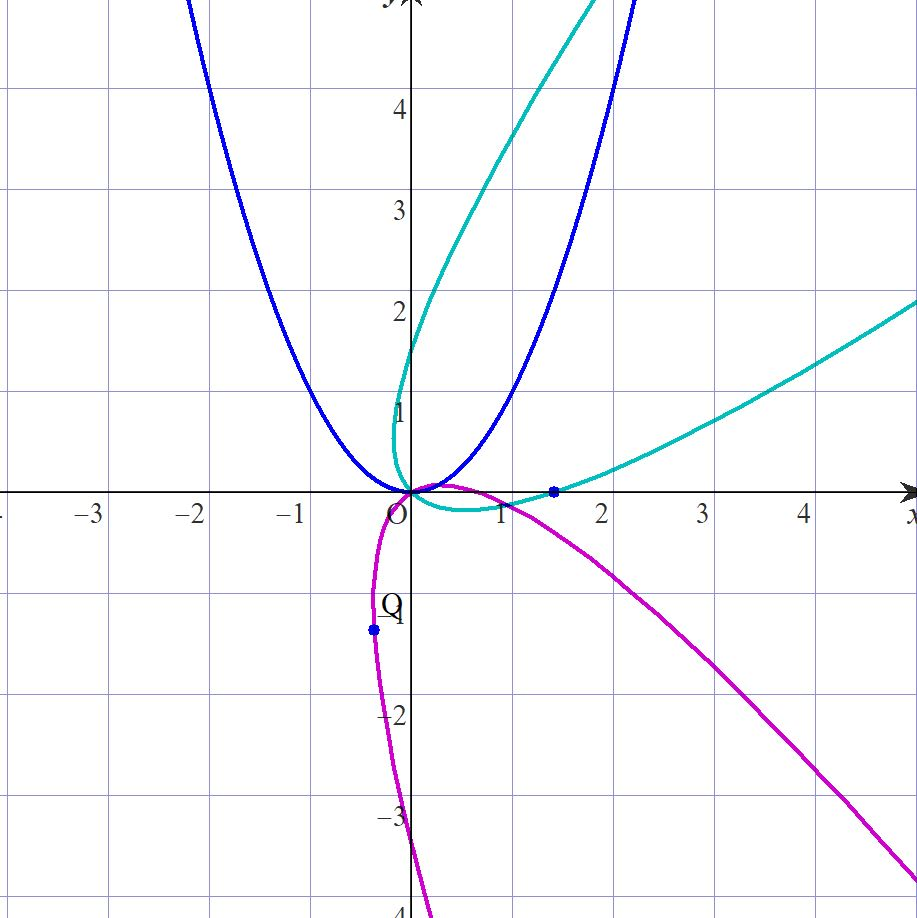
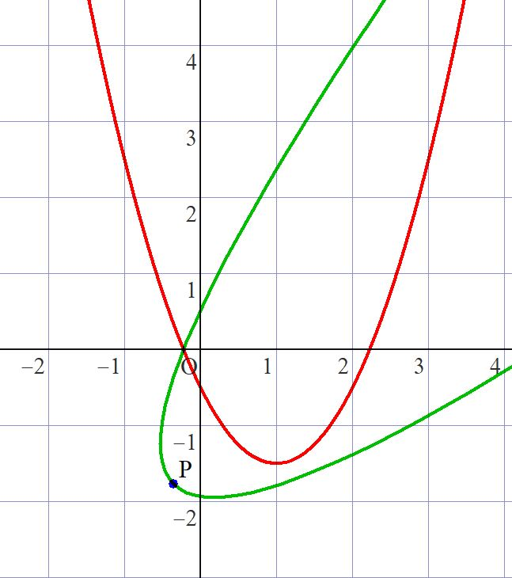

・放物線を回転させたい
中学生のころ数学で新登場する放物線。(世の中は放物線で溢れているが)
中学時代はせいぜいグラフの開き具合と上か下のどちらに凸かぐらいしか調整できない。


数Ⅰになると流石に平行移動ぐらいはできるが、


まだ上に凸か下に凸のものしかないので、「グラフの軸の方程式のx=?の部分は放物線では頂点のx座標に常に等しい」と思い込む奴は異常に多い。
さあ、それではどうすれば放物線が回転できるか。
・放物線回転屋に立ち寄る
それでは放物線回転屋を訪問しよう。
ここでは放物線y=x^2を原点を中心としてβラジアン回転させることを考えよう。
xy平面上の任意の点P(a,b)について、a=r cosα, b=r sinαと表現することが可能で、点Pを原点を中心としてβラジアン回転させた点をP'(c,d)とすると、
c=r cos(α+β) かつ d=r sin(α+β)
⇔c=r cosαcosβ - r sinαsinβ かつ d=r sinαcosβ + r cosαsinβ
⇔c=a cosβ - bsinβ かつ d=bcosβ + asinβ ・・・①
媒介変数をtとしたとき、放物線y=x^2の媒介変数表示は(t,t^2)なので、点Pが放物線y=x^2上にあるとき・・②、a=t かつb=t^2とおけるので、
①
⇔c=t cosβ - t^2sinβ かつ d=t^2cosβ + tsinβ
⇔c=t(cos β-t sinβ) かつ d=t(t cos β+sinβ)・・・③
③は点P'についての媒介変数表示であり、
②のとき、点P'は放物線y=x^2を原点を中心としてβラジアン回転させた放物線上にあるので、③は求める放物線の媒介変数表示である。
あとはやりたければ自分でtを消去すれば関係式が出るが、GRAPESでは媒介変数表示の曲線がかけるのでここでは記述しない。(読者に丸投げ)

ここではβ=-π/4(青緑) ,β=7π/6(紫)で描いている。あとは平行移動などを駆使して自分の好きな放物線が描ける。
・帰宅
放物線回転屋さんでy=x^2のグラフの回転方法を教わった。
では、y=px^2+qx+sの時はどうするか。
①においてy=px^2+qx+sのグラフの媒介変数表示は(t,pt^2+qt+s)なので a=t かつ b=pt^2+qt+sとすれば、
①
⇔c=t cosβ - (pt^2+qt+s)sinβ かつ d=(pt^2+qt+s)cosβ + tsinβ

赤がy=ax^2+bx+cで、緑がこれを原点を中心として-π/4ラジアン回転させたもの。
それではまたいつか。
質問は
掲示板でどうぞ。